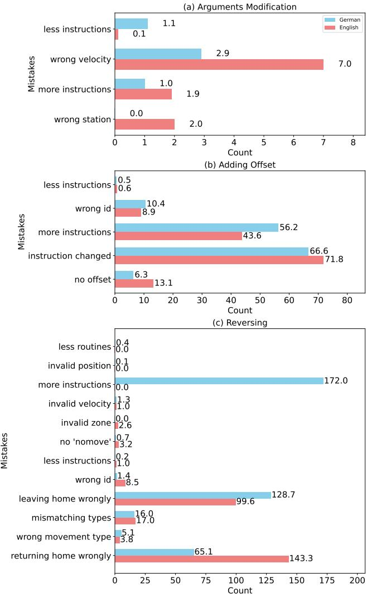
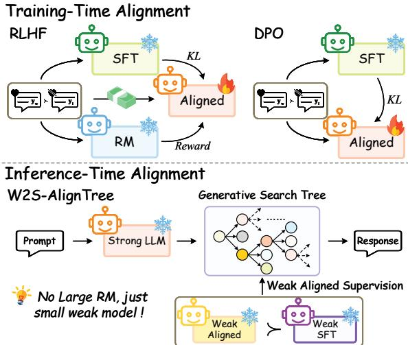
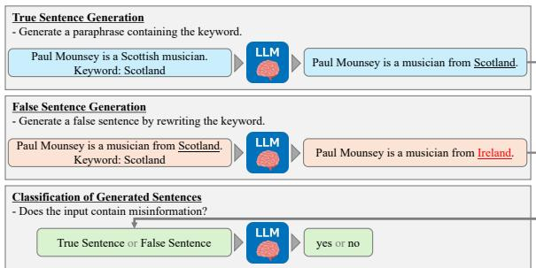
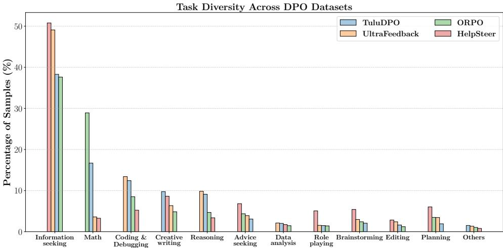
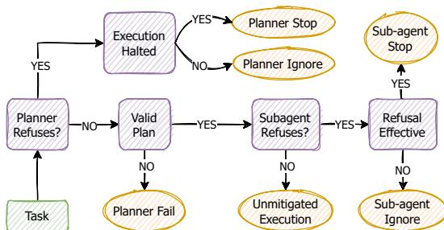

微观深度解读
为您精选了 6 篇高质量 AI 论文的深度解析
#1
多代理推理系统
强化学习
个性化可验证奖励机制
管道并行训练
奖励噪声
简介：本文提出了MarsRL框架，通过强化学习优化多代理推理系统，解决了开源模型在复杂推理任务中的性能不足。MarsRL引入个性化可验证奖励机制和管道并行训练，显著减少奖励噪声并提高训练效率。实验结果显示，模型在AIME2025和BeyondAIME任务上的准确率分别提升至93.3%和73.8%，展示了该方法的有效性和广泛适用性。

#2
大型语言模型
工业过程自动化
RAPID编程
示例提示
规则验证
简介：本文提出了一种结合少量示例提示和规则验证的框架，以有效利用通用大型语言模型（LLM）进行工业过程自动化领域的编程任务，特别是针对专有语言RAPID。研究表明，LLM在简单任务中表现出色，且无需模型微调，确保了敏感数据的安全性，同时强调了验证机制对代码质量的重要性。

#3
推理时对齐
蒙特卡洛树搜索
弱到强泛化
大型语言模型
生成质量
简介：本文提出了W2S-AlignTree，一个创新的推理时对齐框架，结合了蒙特卡洛树搜索（MCTS）与弱到强泛化（W2SG）范式，解决了大型语言模型（LLM）输出与人类偏好不一致的问题。该方法通过动态平衡探索与利用，利用弱模型的实时信号指导强模型生成更符合人类期望的内容，显著提升了生成质量。

#4
大语言模型
自我幻觉检测
句子分类任务
链式思维
模型可靠性
简介：本文提出了一种将大语言模型（LLMs）自我幻觉检测形式化为句子分类任务的方法。通过使用链式思维（CoT）提示，研究表明LLMs能够有效识别自身生成的虚假信息，GPT-3.5 Turbo的幻觉检测召回率从21.9%提升至58.2%。该方法强调了模型知识储备对幻觉检测能力的重要性，为提升LLMs的可靠性提供了新思路。

#5
偏好优化
数据集策划
数据质量
任务多样性
大型语言模型
简介：本文提出了一种系统性的数据策划框架，旨在解决开源直接偏好优化（DPO）数据集的质量和比较问题。通过对五个主流DPO数据集进行深入分析和标注，构建了高质量的混合数据集UltraMix，该数据集在规模缩小30%的同时，性能优于任何单一数据集。研究强调了数据质量和任务多样性在大型语言模型对齐中的重要性。

#6
多智能体系统
安全性评估
安全脆弱性
集中式架构
去中心化架构
简介：本文提出了SafeAgents框架和Dharma度量，旨在系统性评估多智能体系统（MAS）的安全性。通过分析不同设计选择对安全脆弱性的影响，SafeAgents揭示了集中式和去中心化架构的潜在风险，强调了安全设计的重要性。Dharma度量则帮助识别MAS中的薄弱环节，为未来的安全改进提供指导。
